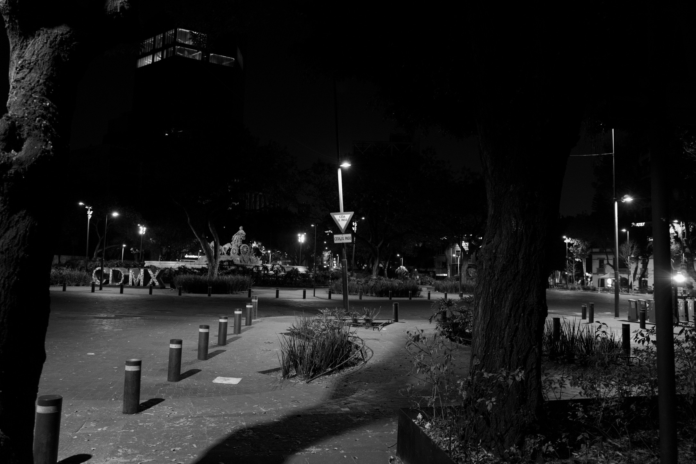

kahran
poetry
Read this poem →

Roma Norte, Mexico City — f/2.5, 1/125s, ISO 6400 — Leica Q2 Monochrome
Three poems for today
All 77 poems →
Sayulita, Nayarit — f/1.7, 1/125s, ISO 6400 — Leica Q2 Monochrome
kahran
poetry
photography
projects
speaking
archive
about
 Sayulita, Nayarit — f/1.7, 1/125s, ISO 6400 — Leica Q2 Monochrome
Sayulita, Nayarit — f/1.7, 1/125s, ISO 6400 — Leica Q2 Monochrome